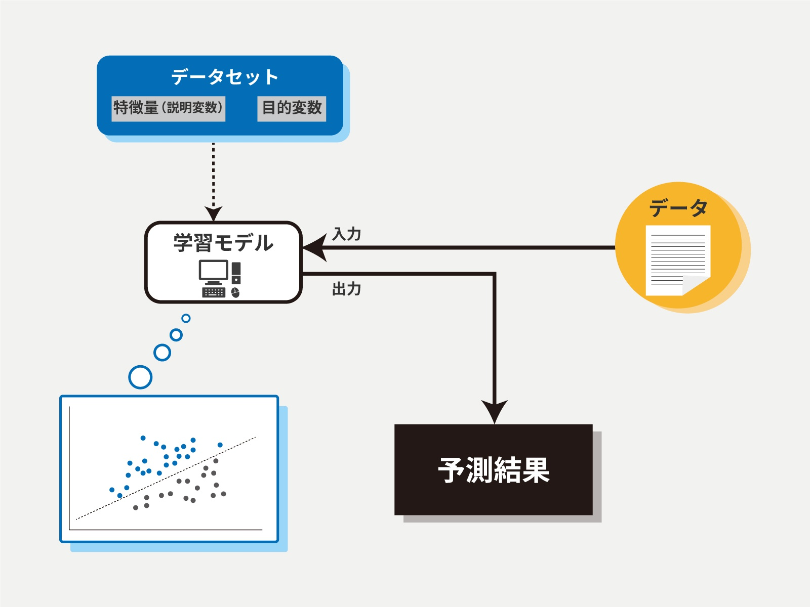
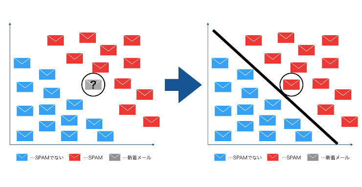
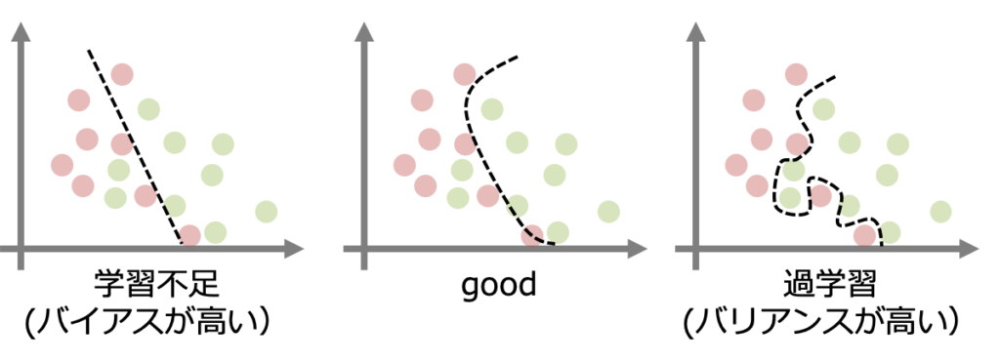
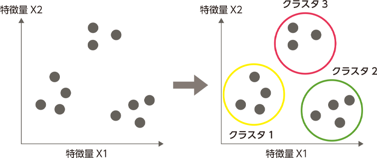
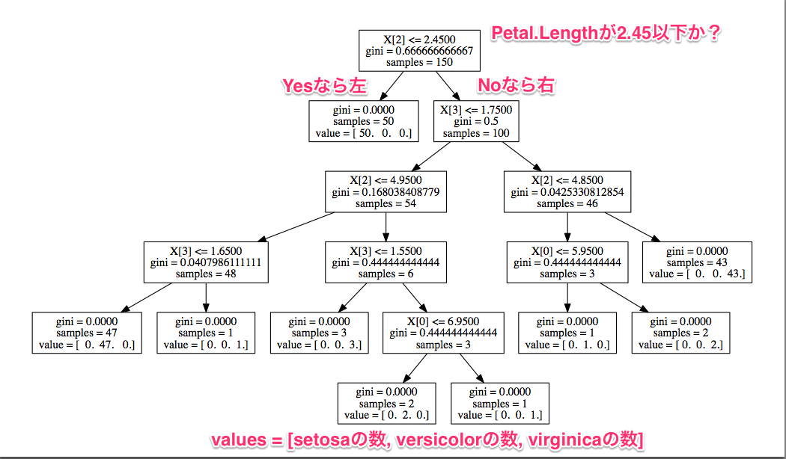
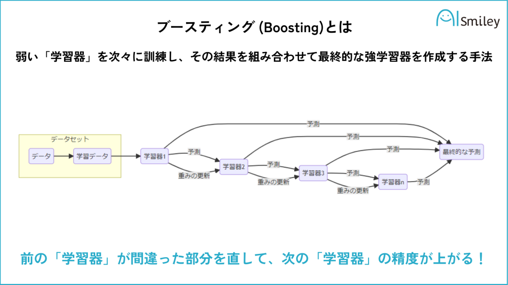
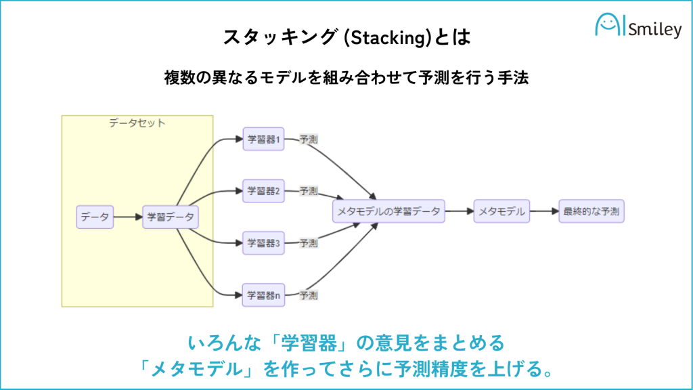
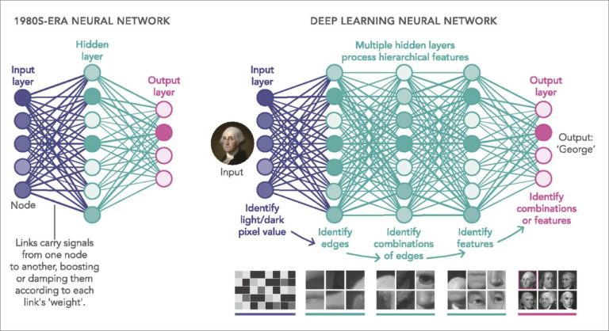
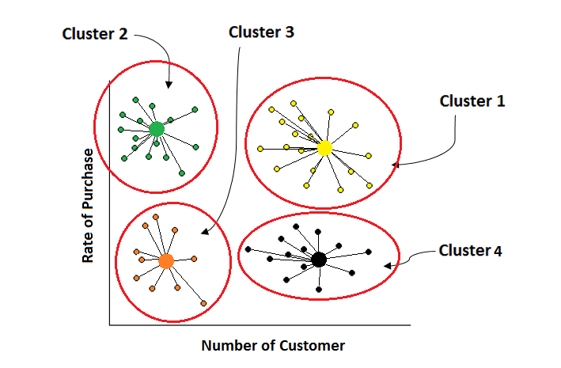
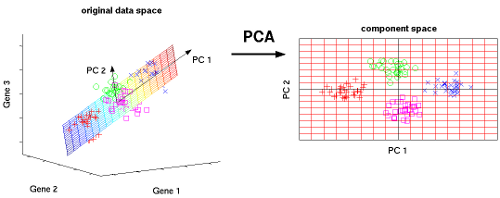

機械学習#
私たちは生まれたときから溢れんばかりのデータに囲まれています。人類の体の感覚器官(目、耳、鼻)は絶えず生データにさらされており、それらのデータは脳によって処理されています。脳はデータを整理し、重要な情報を抽出し、それを元に認識や判断を行います。
このような「観測ー処理」のプロセスを通じて、人間の経験を通じて学習し、特定のタスクを遂行できるように適応していきます。
このプロセスでは、多くの科学研究のプロセスにも似ています。例えば、天文学者は天体の位置や輝度を観測し、気象学者は温度、湿度、風速などの気象データを収集します。そして、観測データを基にモデルを構築し、そのモデルを使って現象を説明したり予測したりします。
現在、電子センサーの発展に伴う、記録されるデータの量は爆発的に増え、その内容も豊かになりました。この大量の情報をすべて理解する系統的な手段があれば、知識に基づく行動が可能になるかもしれません。
機械学習は、コンピュータが大量のデータを学習することで、データの中に潜むパターンと規則性を抽出する技術です。利用可能なデータ、統計学的手法、計算能力が急速に発展したことが、この分野が成長するきっかけとなります。
機械学習の基本概念#
機械はどのように学習するか#
機械学習は、コンピュータが大量のデータを学習することで、データの中に潜むパターンと規則性を抽出する技術です。
人間の脳は生まれたときから「自然に」学習するように作られているが、コンピュータが学習するために必要な条件は明確にしておかなければならないです。ただ、学習者は人間なのか機械なのかに関わらず、基本的な学習プロセスは似ています。
データストレージ#
コンピュータは、ハードディスク、フラッシュメモリ、RAM(Random-Access Memory)、CPUとGPUを組み合わせることで、データを格納しています。
その中に、GPUは特に大量のデータを高速に処理する能力に優れています。もともとは画像処理やレンダリングのために設計されましたが、その並列処理能力の高さから、機械学習やディープラーニングの訓練においても重要な役割を果たしています。
抽象化#
「格納されたデータに広い意味を割り当て」という作業は、抽象化の過程で発生します。
コンピュータが格納したなまデータを要約するためにモデルを使います。
モデルとは、データに内在するパターンを明示的に記述したものであり、様々な種類があります。基本的には、生データを要約し、重要な特徴や傾向を抽出する役割を果たします。
例えば、重力の発見について考えてみよう。Newton、数式(モデル)\(g=9.8m/s^2\)を観測データ(物体が落下する距離と時間の関係)に適合させることで、重力の存在を推測しました。
パターンは常に存在していますが、情報を異なる形式で表現することによって新たに概念化される場合もあります・
汎化#
学習プロセスの次のステップは、抽象化された知識を将来の行動に利用することになります。
パターンをモデル化する手法は様々であり、どのパターンが有益であるかは状況次第です。
汎化では、学習を通じて発見したパターンを絞り込み、将来のタスクに最も役立つのだけを抽出します。
評価#
学習がどれくらいうまくいったのかを評価し、学習器の性能を計測する必要があります。評価を通じて、新しい未知のデータにモデルがどれくらい汎化するのかを判断する。
実際の機械学習プロセス#
ここまでは、機械学習の理論的な仕組みについて説明しましたが、学習プロセスを実際の機械学習実装に適用するといくつのステップで構成されます。
データの収集
データの探索と前処理
生データを学習プロセスに利用できる状態にするために、学習器が期待する入力に合わせてコード化する必要があります
モデルの訓練
アルゴリズムでデータをモデルという形式で表現します
モデルの評価
特定な性能指標でモデルを評価します
機械学習の入力データ#
人間は、テキスト、写真、音声といった非構造化データを難なく処理できますが、コンピューターは一般的にデータが構造化されていることを要求します。つまり、特定な現象のインスタンスがそれぞれ同じ特徴量で構成されていて、それらの特徴量がコンピューターで解釈できる形式に整理されている必要があります。
そのため、非構造化データにコンピューターに処理するためには、入力データを構造化データに変換する必要があります。
機械学習に使われる入力データの形式では、行列形式のデータが多いです。
テキスト: 単語を数値ベクトルに変換し、テキスト全体をベクトルの行列として表現します
画像: 画像をピクセル値の行列として表現します
音声: 時間周波数して表現します
入力データの「質」は、モデルの精度を大きく左右する場合もあります。機械学習モデルの性能を向上させるために、生のデータから新たな特徴量（特徴）を抽出し、作成する一連の作業は特徴量エンジニアリングと呼ばれます。
数値化: カテゴリカルデータ（性別など）を数値に変換する
スケーリング: 異なるスケールの数値データを同じスケールに揃える（標準化、正規化など）
変換: 非線形な関係を持つデータを線形な関係に変換する（対数変換など）
組み合わせ: 既存の特徴量を組み合わせて新しい特徴量を作成する（例：2つの数値特徴量の積）
特徴選択: 多くの特徴量の中から、モデルの性能に最も貢献する特徴量を選択する
機械学習アルゴリズムの種類#
教師あり学習#
教師あり学習（Supervised Learning）：教師あり学習では、入力データ（特徴量）とそれに対応する正解ラベル（目標値）のペアを使用してモデルを訓練します。
モデルは、入力データと正解ラベルの間の関係やパターンを学習し、未知の入力データに対して正しい予測や分類を行うことが期待されます。

教師あり学習の代表的なタスクには、分類（クラスの予測）や回帰（数値の予測）があります。
手書き数字の画像を入力として与え、それぞれの画像がどの数字に対応するのかを予測する手法
住宅価格を予測する回帰モデルなどがあります
クラスラベルを予測するための分類#
「分類」は教師あり学習のサブフィールドの一つである。過去の観測に基づき、新しいインスタンス(データ点)のクラスラベルを予測することが目標となる。
例えば、メールスパムフィルタの例について考えてみよう。この場合、機械学習のアルゴリズムが「スパムメール」と「非スパムメール」という二つのクラスを区別

メールをなんらかに形で、２次元の特徴量で表現するシナリオを考えてみよう。
黒い線で示されている決定境界を学習すれば、二つのクラスを区別し、新しいデータの値の基づいてクラスを分類できるようになります。
連続値を予測するための回帰#
教師あり学習アルゴリズムは、数値データの予測にも利用でいます。唯一の手法ではないが、一般的な形式の数値予測には、回帰アルゴリズムは広く使われています。
機械学習の分野では、予測変数を一般的に特徴量と呼び、応答変数を目的変数と呼ばれます。
教師あり学習の仕組み#
教師あり学習では、モデルの学習、評価、検証のために、大きく分けて3種類のデータセットが用いられます。
教師データ: 入力データ（特徴量）と、それに対応する正解ラベル（目的変数）のペアで構成されています。モデルが、入力データから正解ラベルを予測するパターンを学習します。
検証データ: 検証データを用いて、様々なハイパーパラメータの組み合わせを試行し、最も良い性能を示す組み合わせを選び出すことができます
テストデータ: 学習済みのモデルの性能を評価するために使用されるデータです。モデルが、学習していない新しいデータに対しても高い予測精度を発揮できるかを確認します。
損失関数: 機械学習モデルが予測した値と、実際の正解値との間の誤差を数値化する関数のことです。この誤差を最小化することで、モデルの精度を向上させることを目指します。
回帰問題によく使われる損失関数: 二乗誤差
分類問題によく使われる損失関数: クロスエントロピー誤差
過学習#
過学習とは、データの傾向に沿うようにモデルを学習させた結果、学習時のデータに対してはよい精度を出すが、未知データに対しては同様の精度を出せないモデルが構築されてしまうことです。過学習になると、モデルを実運用することが難しくなってしまいます。
過学習は、特定のデータにモデルが過剰に適合（学習）してしまうことによって生じます。モデルを学習する際には、過学習の発生に注意しながら、データ、モデル、学習方法それぞれに対し、それを防ぐよう対処する必要があります。

過学習を防ぐ方法は多岐にわたりますが、どの方法が最も効果的かは、データの種類やモデルの種類によって異なります。
正則化
Early Stopping（早期終了）
Dropout(ドロップアウト)
教師なし学習#
教師なし学習（Unsupervised Learning）：教師なし学習では、正解ラベルを使わずに入力データのみを使用してモデルを訓練します。
モデルはデータ内のパターンや関連性を自動的に発見し、データをクラスタリング（類似したデータのグループ化）や次元削減データの特徴量を圧縮)などの方法で解析します。
クラスタリング#
情報を構造化し、データ間の意味ある関係を導き出すのに適した手法です。分析によって浮かび上がる各クラスは、オブジェクトからなるグループを定義します。

次元削減#
高次元のデータを次元削減を適用することで、データからノイズを取り除き、関連する大半の情報を維持する上で、データをより低次元の部分空間に圧縮する手法なります。
高次元の特徴量を可視化することで、データの分布や特徴を視覚的に捉えることができます。

機械学習アルゴリズム#
教師あり学習#
線形回帰#
線形回帰は、ある変数（目的変数）が、他の変数（説明変数）の線形な関数で表されるというモデルを構築する統計学の手法です。つまり、説明変数の値の変化が、目的変数の値にどのように影響するかを、線形的な関係としてモデル化します。
サポートベクターマシン (SVM)#
サポートベクターマシンは、データのクラスを最もよく分離する超平面を特定することで分類や回帰をを行うアルゴリズムです。
SVMの核となる概念は、マージン最大化とカーネル法です。
マージン最大化
サポートベクターマシンが高精度でクラス分類などのタスクを実行するために、「マージン最大化」と呼ばれる考え方を用いています。「マージン」とは、クラスの分類基準となる境界と、各データとの距離のことです。
マージン最大化すること、つまり2つのサポートベクトルから最も遠い位置に境界線を設定することを意味します。マージンが小さい場合、データが少し変動するだけで境界を超えてしまうため、分類結果が変わりやすく、誤判定のリスクが出てくるでしょう。

カーネル法
線形分離できないデータの場合、SVMはカーネル法と呼ばれるテクニックを用いて、データを高次元空間に写像します。高次元空間では、線形分離が可能になる場合が多く、SVMは元のデータ空間で非線形な境界線を引くような効果を実現できます。

決定木とランダムフォレスト#
決定木は、樹木状の構造を用いてデータを分類したり、数値を予測したりする機械学習のアルゴリズムです。まるで木が枝分かれするように、データの特徴量を基に、Yes/Noといった質問を繰り返していくことで、最終的に分類や予測を行います。

決定木の構造は視覚的に分かりやすく、多様なデータに適用できるなどのメリットが挙げられますが、データのわずかな変化で、決定木の構造が大きく変わることによって、不安定の問題はしばしば発生します。
ランダムフォレストは、複数の決定木を組み合わせることで、決定木の単体よりも高精度な予測を実現するアンサンブル学習の手法です。
複数の決定木を生成: 複数の決定木を、それぞれ異なる部分集合のデータと特徴量を用いて作成します。
多数決: 各決定木の予測結果を多数決で集計し、最終的な予測結果とします。
アンサンブル学習#
アンサンブル学習とは、複数のモデルを組み合わせて学習器を生成する機械学習の手法です。 アンサンブル学習に用いられる各学習機は弱学習器とよばれ、単体では精度のよいものではありませんが、複数組み合わせることで、精度の高いモデルを構成することができます。
代表的なアンサンブル学習の手法には以下のようなものがあります。
バギング: 同じ学習アルゴリズムを異なる学習データで学習させた複数のモデルの予測結果を多数決で決定します。

ブースティング: 弱い学習器を順に学習させ、前の学習器の誤りを修正するように次の学習器を学習させる手法です。ブースティングの例としては、AdaBoost、XGBoost、Gradient Treeなどがあります。

スタッキング: 複数の異なるベースモデルの予測結果を新たな特徴量として、メタモデルで予測する手法です。
第一段階で様々な学習器（例：ロジスティック回帰やランダムフォレスト）にそれぞれブートストラップ法で得たデータセットを学習させます。
第二段階では、どの学習器の組み合わせを使うと正解率が一番高いかを学習します。学習器によって正解率が高いものと低いものがあるので、より正解率の高い学習器のみを組み合わせることによって、ランダムで組み合わせるよりも精度が高くなります。

ニューラルネットワーク#
Deep Learningは機械学習においても話題の中心になっています。Deep Learningについては、多層のニューラルネットワークを効率よく訓練するための機械学習のサブフィールドとして考えることができます。
ニューラルネットワークは、人間の脳の神経回路網を模倣した数学的なモデルであり、以下のように表現することができます。

ニューロンは、入力信号を受け取って、重み付けと活性化関数を経て出力信号を生成します。
ニューラルネットワークは、入力が行われる「入力層」、中間にある「隠れ層（中間層）」、出力が行われる「出力層」から作られます。
層と層の間には「重み」で各ニューロン間の接続の強さを表し、学習によって調整されます。ニューラルネットワークの学習とは、これらの重みを調整する過程です。誤差逆伝播法と呼ばれるアルゴリズムを用いて、出力と正解との誤差を最小にするように、重みが少しずつ更新されていきます。
Deep Learningは、連続する層の学習に重点が置かれます。それらの層が深くなるほど、より複雑な特徴を捉え、高度なタスクに対応できるようになります。

ニューラルネットワークでは、従来の機械学習手法での特徴エンジニアリングの手順を自動化にしました。ニューラルネットワークのパラメータは、学習を通じて最適化され、入力データから適切な特徴を抽出するためのフィルターのような役割を果たします。その意味で、人間が事前に介入する労力を低減できます。
教師なし学習#
K-means#
k-means法は、データをいくつかのグループ（クラスタ）に分類する手法です。特に、非階層クラスタリングと呼ばれる、あらかじめクラスタの数が決まっている場合に用いられる手法としてよく知られています。
初期化: データの中からランダムに\(k\)個の点を中心点として選びます。このkが、最終的に得たいクラスタの数になります。
割り当て: 各データを、最も近い中心点を持つクラスタに割り当てます。
更新: 各クラスタに属するデータの平均値を新しい中心点とします。
反復: 2と3を、中心点がほとんど動かなくなるまで繰り返します。

PCA#
PCA（Principal Component Analysis）は、多次元のデータをより低次元の空間に圧縮し、元の特徴量よりも少ない数の変数（次元）でデータを説明する手法です。
共分散行列の計算: データの各変数間の相関関係を表す共分散行列を計算します。
固有値・固有ベクトルの計算: 共分散行列の固有値・固有ベクトルを求めます。固有ベクトルは、データの分散が最大となる方向を示します。
主成分の選択: 固有値が大きい順に固有ベクトルを選択し、新しい座標軸（主成分）とします。
データの投影: 元のデータを新しい座標軸に投影することで、低次元空間に変換します。
